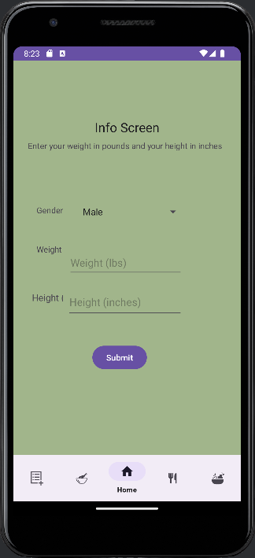
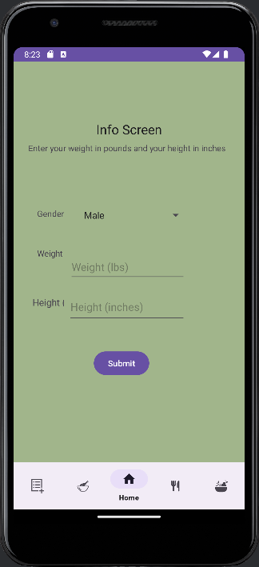
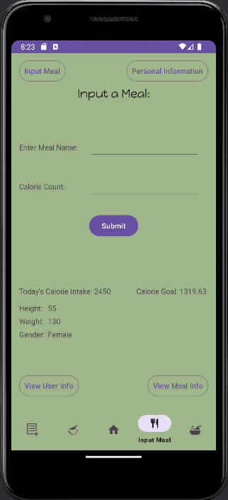
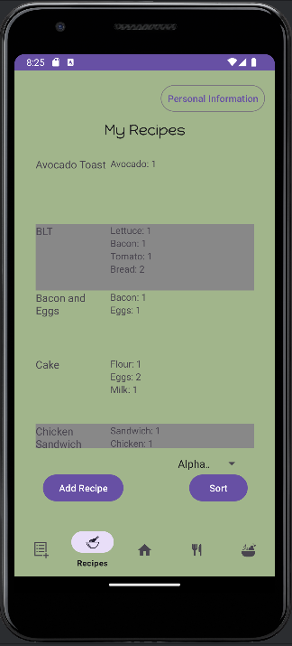
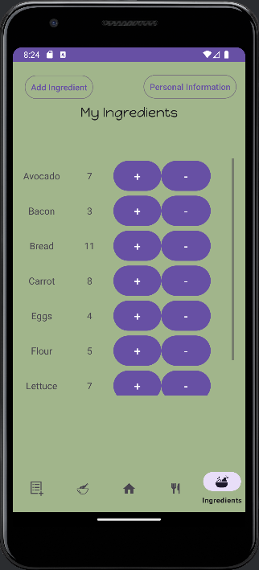

 This is our Personal Information Screen. On this page, users can input their info, including gender, weight, and height.
 This is our Personal Information Screen. On this page, users can input their info, including gender, weight, and height.
 This is our Input Meal Screen. On this page, users can enter a meal as well as the calories for meals, and track how many calories they've taken in compared to their goal.
 This is our Recipes Screen. On this page, users can look through meals they have eaten, track the ingredients, and add new recipes at the bottom.
 This is our Ingredients Screen. On this page, users can edit their ingredients and view their current list of items.